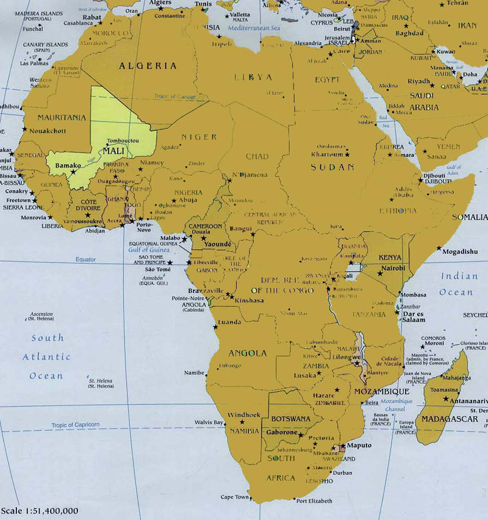

Many people refer to Timbuktu (Tombouctou) as a place being so far far away or a place that does not exist, but have you ever wondered where Timbuktu 'really' is located? Well, you have come to the RIGHT place as Timbuktu has been one of the most visited places in Mali! That's right, Timbuktu is an ACTUAL place that exist and it is located in Mali, West Africa. Lucky for you, this website will give helpful information for anybody interested in visiting Mali and any of its regions.

Location and Geography
Situated in West Africa, Mali is a country bordered by Niger, Burkina Faso, Ivory Coast (Cote d'Ivoire), Guinea, Senegal, Mauritania and Algeria.
Mali is divided into eight (8) regions which are:
- Kayes
- Koulikoro
- Sikasso
- Segou
- Mopti
- Timbuktu (Tombouctou)
- Gao
- Kidal and
- The District of Bamako
Population